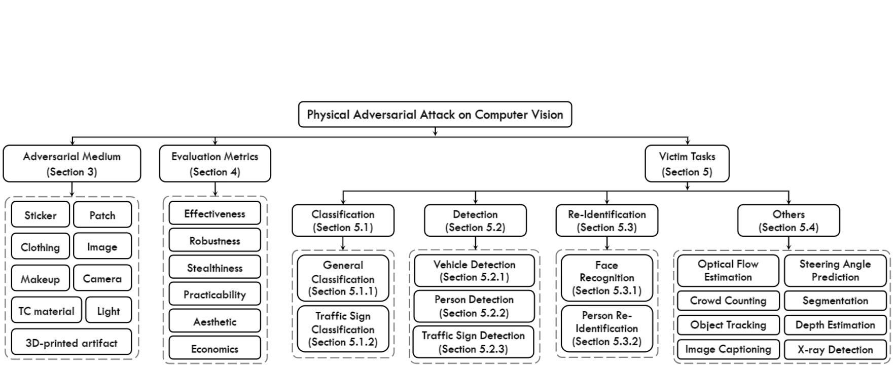

Publications
Revisiting Adversarial Patches for Designing Camera-Agnostic Attacks against Person Detection
Hui Wei, Zhixiang Wang, Kewei Zhang, Jiaqi Hou, Yuanwei Liu, Hao Tang, Zheng Wang
Advances in Neural Information Processing Systems (NeurIPS), 2024
[ Paper ] [ Code ] [ Project Page ]
Hui Wei, Zhixiang Wang, Kewei Zhang, Jiaqi Hou, Yuanwei Liu, Hao Tang, Zheng Wang
Advances in Neural Information Processing Systems (NeurIPS), 2024
[ Paper ] [ Code ] [ Project Page ]
